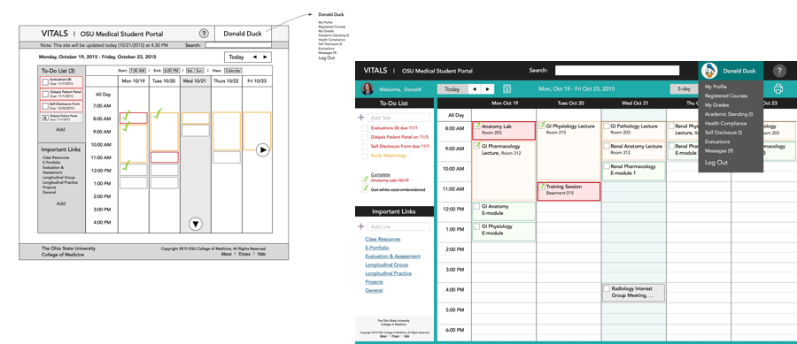

OSU medical student portal for tracking schedule and tasks
Scope: Personal Project
Client: The Ohio State University College of Medicine
Target Audience: Medical Students
My Role: UX Design Volunteer, Former User
Timeline: Oct 2015
Redesign the portal web application for medical students to be able to effectively and efficiently manage their coursework and required tasks.
The goal of the VITALS Integration Team is to redesign VITALS, a web application that medical students use to view their daily schedule, grades, and academic status, access lecture slides and notes, and complete forms and evaluations. It is basically the central portal for medical students. To gain design experience, I volunteered to help out with the design process a few hours a week. The team consists of a project manager and 3 developers. As a former medical student who used VITALS on a daily basis, I also had a lot of insight into the user’s perspective and the existing pain points and useful features within VITALS.
First, I spoke with Dr. Danforth, the curriculum program director, about the general purpose of VITALS and specific requirements or desired features. I then considered my own usage of VITALS and created documents highlighting the primary points and my own frustrations with the interface.
For preliminary user research, I first surveyed a few other medical students about their experiences with VITALS. I also thought about my own experience and aspects I found frustrating
Next I created wireframes and a mockup while considering the users’ comments and my own thoughts. I combined these along with the student feedback and sent them to the team.
I then met with the other team members and discussed challenges and ideas. I discovered issues such as inadequate resources, compensation, and time for the team members. We discussed the next steps and decided that I would look through additional user feedback from the VITALS e-mail and come up with a few other ideas for the team to discuss and compare.
As a former medical student at OSU who experienced the daily stress of having hundreds of articles to read, assignments to do, quizzes, and required events and training, I knew that the student portal was extremely vital (probably why it is called "VITALS"). It was supposed to be the central location for everything med student-related. However, I often felt frustrated and overwhelmed by VITALS. I think having this first-hand experience of being a user gave me a lot of ideas for how VITALS could be improved.
However, since I had little time for this role as a volunteer, and the team members were also limited on time and resources, the overall design process was very minimal. I would have liked to spend more time interviewing medical students and observing them using VITALS to see other points of view and better understand how to improve the overall user experience.
Next Project →